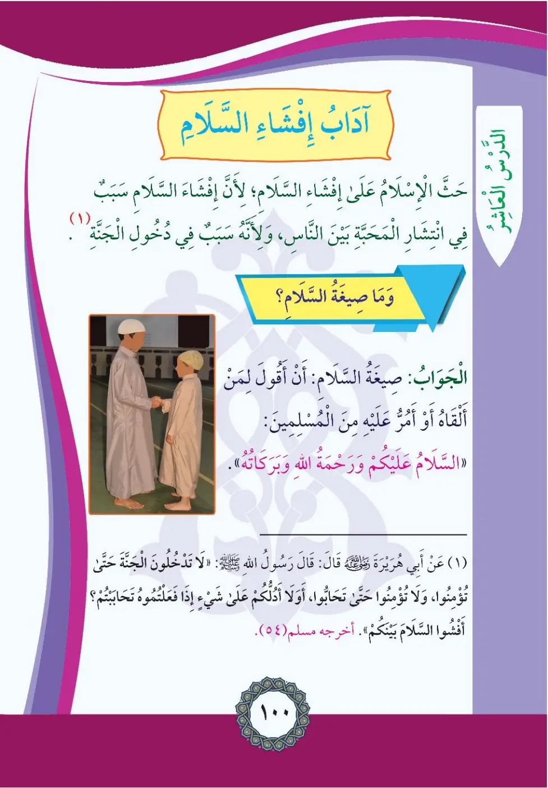
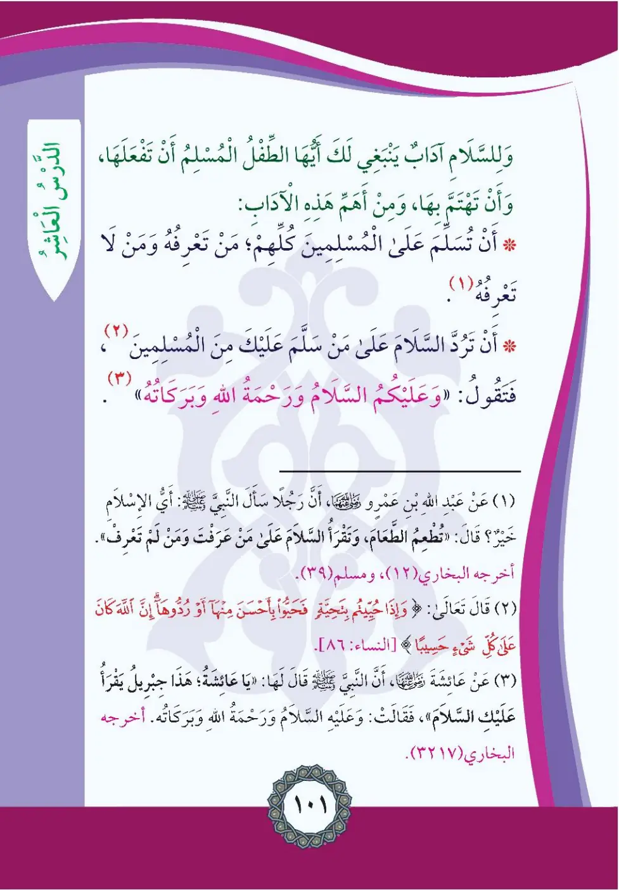

Stage 2·المرحلة الثانية⭐ Unit 1
آدَابُ إِفْشَاءِ السَّلَامِ Etiquette of Spreading the Greeting
From the Textbookpp. 101–102


حَثَّ الْإِسْلَامُ عَلَى إِفْشَاءِ السَّلَامِ؛ لِأَنَّ إِفْشَاءَ السَّلَامِ سَبَبٌ فِي انْتِشَارِ الْمَحَبَّةِ بَيْنَ النَّاسِ، وَهُوَ سَبَبٌ فِي دُخُولِ الْجَنَّةِ. صِيغَةُ السَّلَامِ وَالْجَوَابِ: إِذَا لَقِيتَ مُسْلِمًا أَوْ أَمَرَّ عَلَيْكَ مِنَ الْمُسْلِمِينَ أَقُولُ: «السَّلَامُ عَلَيْكُمْ وَرَحْمَةُ اللَّهِ وَبَرَكَاتُهُ».
Hadda al-islamu 'ala ifsha'i as-salam; li-annahu sababun fi intishari al-mahabbati bayna an-nas.
Islam urges spreading the greeting of salam, for it spreads love among people and is a cause of entering Paradise.
The wording of the greeting and its reply:
When I meet a Muslim or pass by one, I say: "Peace be upon you and Allah's mercy and blessings."
சலாம் பரப்புவது மக்களிடையே அன்பு பரவவும், சுவர்க்கம் செல்லவும் காரணம்; முஸ்லிமை சந்தித்தால் "ஸலாம் உங்கள் மீது" என கூறுவேன்.
(١) وَعَنْ أَبِي هُرَيْرَةَ رَضِيَ اللَّهُ عَنْهُ قَالَ: قَالَ رَسُولُ اللَّهِ صلى الله عليه وسلم: «لَا تَدْخُلُونَ الْجَنَّةَ حَتَّى تُؤْمِنُوا، وَلَا تُؤْمِنُوا حَتَّى تَحَابُّوا، أَلَا أَدُلُّكُمْ عَلَى شَيْءٍ إِذَا فَعَلْتُمُوهُ تَحَابَبْتُمْ؟ أَفْشُوا السَّلَامَ بَيْنَكُمْ». أَخْرَجَهُ مُسْلِمٌ (٥٤)
La tadkhuluna al-jannata hatta tu'minu, wa-la tu'minu hatta tahabbu.
Abu Hurayrah reported that the Messenger of Allah said: "You will not enter Paradise until you believe, and you will not believe until you love one another. Shall I not guide you to something which, if you do it, you will love one another? Spread the greeting of peace among you." (Muslim 54)
"நீங்கள் ஒருவரையொருவர் அன்பு செய்யாமல் ஈமான் பூணமாட்டீர்கள்... சலாமை உங்களிடையே பரப்புங்கள்" (முஸ்லிம் 54)
وَلِلسَّلَامِ آدَابٌ يَنْبَغِي لَكَ أَيُّهَا الطِّفْلُ الْمُسْلِمُ أَنْ تَفْعَلَهَا، وَمِنْ أَهَمِّ هَذِهِ الْآدَابِ: أَنْ تُسَلِّمَ عَلَى الْمُسْلِمِينَ كُلِّهِمْ؛ مَنْ تَعْرِفُهُ وَمَنْ لَا تَعْرِفُهُ. وَأَنْ تَرُدَّ السَّلَامَ عَلَى مَنْ سَلَّمَ عَلَيْكَ فَتَقُولُ: «وَعَلَيْكُمُ السَّلَامُ وَرَحْمَةُ اللَّهِ وَبَرَكَاتُهُ».
An tusallima 'ala al-muslimina kullihim, man 'arafta wa-man lam ta'rif.
The greeting has manners you should follow, O Muslim child - the most important of them:
Greet all Muslims, those you know and those you do not know.
Return the greeting to whoever greets you saying: "And upon you be peace and Allah's mercy and blessings."
தெரிந்தவர்களுக்கும் தெரியாதவர்களுக்கும் எல்லோருக்கும் சலாம் கூற வேண்டும்; சலாம் கூறியவருக்கு பதில் கூற வேண்டும்.
(١) وَعَنْ عَبْدِ اللَّهِ بْنِ عَمْرٍو رَضِيَ اللَّهُ عَنْهُمَا أَنَّ رَجُلًا سَأَلَ النَّبِيَّ صلى الله عليه وسلم: أَيُّ الْإِسْلَامِ خَيْرٌ؟ قَالَ: «تُطْعِمُ الطَّعَامَ، وَتَقْرَأُ السَّلَامَ عَلَى مَنْ عَرَفْتَ وَمَنْ لَمْ تَعْرِفْ». أَخْرَجَهُ الْبُخَارِيُّ (١٢)، وَمُسْلِمٌ (٣٩)
Ayyu al-islami khayr? Qala: Tu't'imu at-ta'am, wa-taqra'u as-salama.
Abdullah ibn Amr reported that a man asked the Prophet: Which Islam is best? He said: "You feed others and greet with peace those you know and those you do not know." (Bukhari 12, Muslim 39)
"இஸ்லாத்தில் சிறந்தது எது? - உணவூட்டுவதும், தெரிந்தோ தெரியாதோ எல்லோருக்கும் சலாம் கூறுவதும்" (புகாரி 12, முஸ்லிம் 39)
﴿(٢) وَإِذَا حُيِّيتُم بِتَحِيَّةٍ فَحَيُّوا بِأَحْسَنَ مِنْهَا أَوْ رُدُّوهَا ۗ إِنَّ اللَّهَ كَانَ عَلَىٰ كُلِّ شَيْءٍ حَسِيبًا﴾
Wa-idha huyyitum bi-tahiyyatin fahayyu bi-ahsana minha aw radduha.
"(2) And when you are greeted with a greeting, greet in return with one better than it or return it. Indeed, Allah is ever, over all things, an Accountant."
"உங்களுக்கு ஒரு வணக்கம் செலுத்தப்படும்போது அதைவிட சிறந்ததாகவோ அல்லது அதையே பதிலளியுங்கள்" (அல்-நிஸா 86)
(٣) وَعَنْ عَائِشَةَ رَضِيَ اللَّهُ عَنْهَا قَالَتْ: قَالَ لِي رَسُولُ اللَّهِ صلى الله عليه وسلم: «يَا عَائِشَةُ، هَذَا جِبْرِيلُ يُقْرِئُكَ السَّلَامَ» فَقُلْتُ: وَعَلَيْهِ السَّلَامُ وَرَحْمَةُ اللَّهِ وَبَرَكَاتُهُ. أَخْرَجَهُ الْبُخَارِيُّ (١٧/٣٢)
Ya 'A'isha, hadha jibrilun yuqri'uka as-salam.
Aisha reported: The Messenger of Allah said to me: "O Aisha, this is Jibril greeting you with salam," so I said: "And upon him be peace and Allah's mercy and blessings." (Bukhari 17/32)
நபி (ஸல்): "ஜிப்ரீல் உனக்கு சலாம் கூறுகிறான்" என அறிவித்தபோது ஆயிஷா (ரலி) "அவருக்கும் ஸலாம்" என பதிலளித்தார்கள் (புகாரி 17/32)